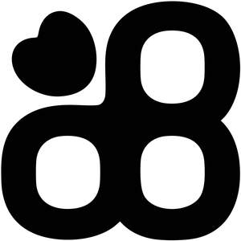

Trade Mark Journal No.2026/008 20 February 2026
UK00004335200 4 February 2026 (18,25,35)

- Class 18
- Animal harnesses; Animal leashes; Harnesses for animals; Harness for animals; Collars for animals; Collars of animals; Leashes for animals; Animal apparel; Animal covers; Clothing for animals; Dog waste bag dispensers adapted for use with leashes; Bags for carrying pets; Animal carriers [bags]; Raincoats for pet dogs; Tote bags; Sling bags; Bum bags; Bags; Bags for carrying animals; Dog apparel; Dog clothing; Clothing for dogs; Pet clothing; Dog shoes; Dog parkas; Dog leashes; Clothing for pets; Pets (Clothing for -); Dog collars; Clothing for domestic pets; Dog coats; Garments for pets; Cat collars; Dog bellybands; Clothes for animals; Coats for dogs; Pet hair bows; Collars for cats; Collars for pets; Dog leads; Collars for pets bearing medical information; Harnesses; Harness; Pet leads; Animal leads; Leads for animals.
- Class 25
- Clothing; Jackets [clothing]; Knitwear [clothing]; Ready-to-wear clothing; Woolen clothing; Garments for protecting clothing; Linen clothing; Headbands [clothing]; Headbands for clothing; Gloves [clothing]; Gloves as clothing; Clothes; Jerseys [clothing]; Shorts [clothing]; Collars [clothing]; Parts of clothing, footwear and headgear; Knitted clothing; Hoods [clothing]; Windproof clothing; Embroidered clothing; Wristbands [clothing]; Belts [clothing]; Belts for clothing; Rainproof clothing; Waterproof clothing; Casual clothing; Visors [clothing]; Jackets being sports clothing; Jackets (Stuff -) [clothing]; Stuff jackets [clothing]; Bottoms [clothing]; Clothing for leisure wear; Ready-made clothing; Leisure clothing; Athletic clothing; Muffs [clothing]; Bodies [clothing]; Tops [clothing]; Weatherproof clothing; Water-resistant clothing; Fabric belts [clothing]; Handwarmers [clothing]; Beach clothing; Thermal clothing; Sweatshirts; Hooded sweatshirts; Hoodies; T-shirts; Short-sleeved T-shirts; Sweaters; Turtleneck shirts; Long-sleeved shirts; V-neck sweaters; Shirts; Tee-shirts; Turtleneck sweaters; Hooded pullovers; Short-sleeved shirts; Turtleneck pullovers; Sweatpants; Fleece pullovers; Pullovers; Short-sleeve shirts; Hooded sweat shirts; Corduroy shirts; Cardigans; Fleece jackets; Sleeveless pullovers; Knit shirts; Sleeved jackets; Jumpers [sweaters]; Beanies; Sleeveless jackets; Quilted jackets [clothing]; Printed t-shirts; Knit jackets; Tank-tops; Polo sweaters; Jumpers [pullovers]; Jackets; Denim jackets; Sports shirts; Fleece shorts; Yoga shirts; Sweat shirts; Sweatsuits; Sleeveless jerseys; Parkas; Men's and women's jackets, coats, trousers, vests; Tracksuits; Overshirts; Woven shirts; Casual shirts; Beanie hats; Sleep shirts; Anoraks [parkas]; Sweat jackets; Crew neck sweaters; Padded jackets; Leggings [trousers]; Casual jackets; Windproof jackets; Night shirts; Tracksuit tops; Hooded tops; Jerseys; Bandanas; Hooded bathrobes; Wind-resistant jackets; Gloves for apparel; Scarfs; Weatherproof jackets; Leggings [leg warmers]; Yoga pants; Trousers; Shorts; Jogging pants; Pajama bottoms; Jogging bottoms [clothing]; Yoga bottoms; Tracksuit bottoms; Sweatshorts; Gym shorts; Gymwear; Sweat pants; Vest tops; Yoga tops.
- Class 35
- Retail services connected with the sale of clothing and clothing accessories; Wholesale ordering services; Wholesale services relating to clothing; Wholesale services in relation to clothing; Wholesale services in relation to bags; Wholesale services in relation to footwear; Retail services in relation to pet products; Wholesale services in relation to bedding for animals; Wholesale services in relation to beauty implements for animals; Retail store services in the field of clothing; Online retail store services in relation to clothing; Online retail store services relating to clothing; Retail services in relation to bedding for animals; Retail services in relation to clothing; Online retail services relating to clothing; Retail services in relation to clothing accessories; Retail services in relation to bags; Retail services in relation to litter for animals; Retail services in relation to animal grooming preparations; Retail services in relation to hygienic implements for animals; Wholesale services in relation to animal grooming preparations; Wholesale services in relation to litter for animals.
Pawsome Paws Boutique Ltd